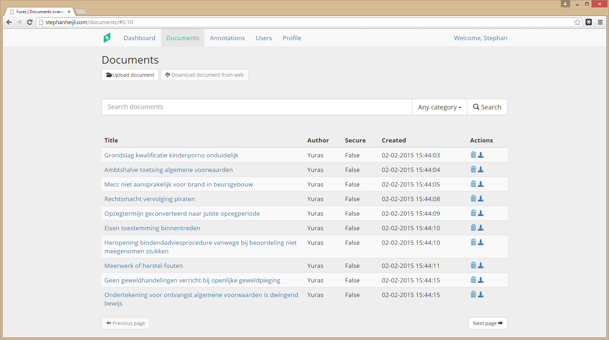
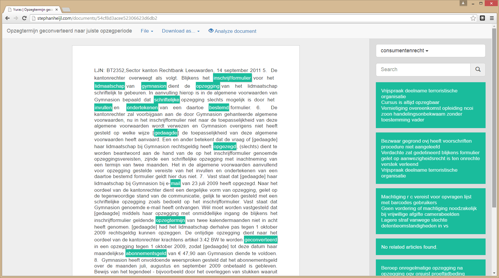
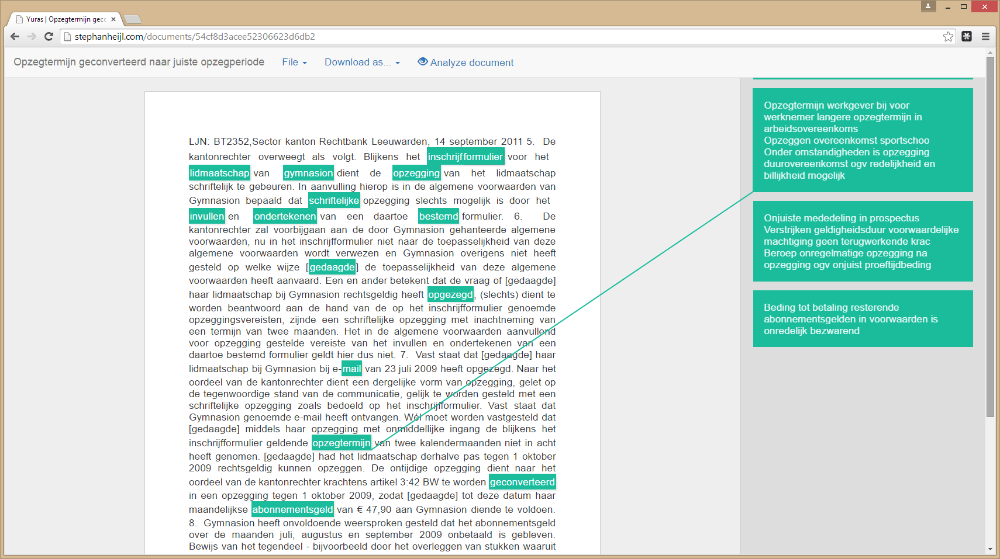

Juridische professionals besteden maandelijks uren aan het doorlezen en bestuderen van jurisprudentie en andere relevante data voor elke casus.
Yuras verandert dit.
Yuras
analyseert documenten, vind de meest relevante woorden en pikt deze er
algoritmisch uit. Op basis hiervan worden andere documenten aangeraden en gelinked. Hiermee kunt u snel een bundel met documenten opbouwen voor een casus.
Alle informatie wordt met geavanceerde encryptie
veilig opgeslagen. Documenten en casii worden gebackupped op verschillende servers. Bij Yuras kan
niemand behalve u de opgeslagen data lezen. Ook wordt er gebruik gemaakt van two-factor authentication.
De
gebruiksvriendelijke interface met bekende elementen zorgt ervoor dat u snel aan de slag kan. Als u heeft gewerkt met Microsoft Word en een browser, kunt u werken met Yuras. Voor toegewijde gebruikers zijn
workshops beschikbaar.
Features
Yuras biedt een unieke set aan features die uw workflow aanzienlijk kunnen bevorderen. Deze zijn vooral gericht op het efficienter maken van het doorzoeken van jurisprudentie en het vinden van relaties tussen verschillende documente
 Doorzoeken van juridische documenten op basis van categorie en trefwoorden.

Documenten lezen en markeren om de meest relevante tekst snel eruit te halen.

Snel gerelateerde documenten vinden op basis van trefwoorden in documenten.
Prijzen
Prijzen bij Yuras zijn simpel. Wij zijn er van overtuigd dat we u tijd kunnen besparen met onze producten. Door onze prijzen niet te baseren op de kosten van het product, maar op wat het uw bedrijf oplevert, kunnen we ons optimaal richten op het leveren van het beste product en de beste service. Daarom betaalt iedere klant een vaste prijs per maand. U hoeft niet in de gaten te houden hoeveel documenten u opslaat, hoe vaak u Yuras gebruikt of wanneer u ons belt voor hulp.
€ ?,-
/ maand / gebruiker, excl. btw
Ons onderzoek wijst uit dat één uur van de tijd van een jurist hun werkgever ? tot ?€ kost. Als Yuras uw bedrijf
één uur per maand per gebruiker bespaart dan heeft u de kosten er al uit.